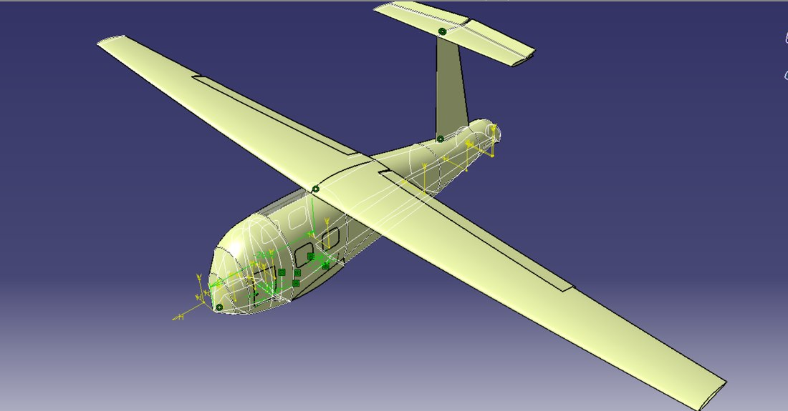
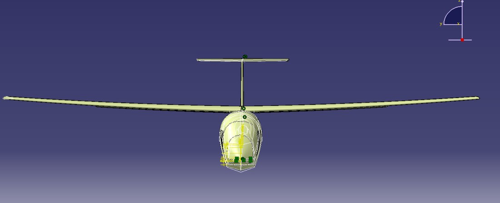
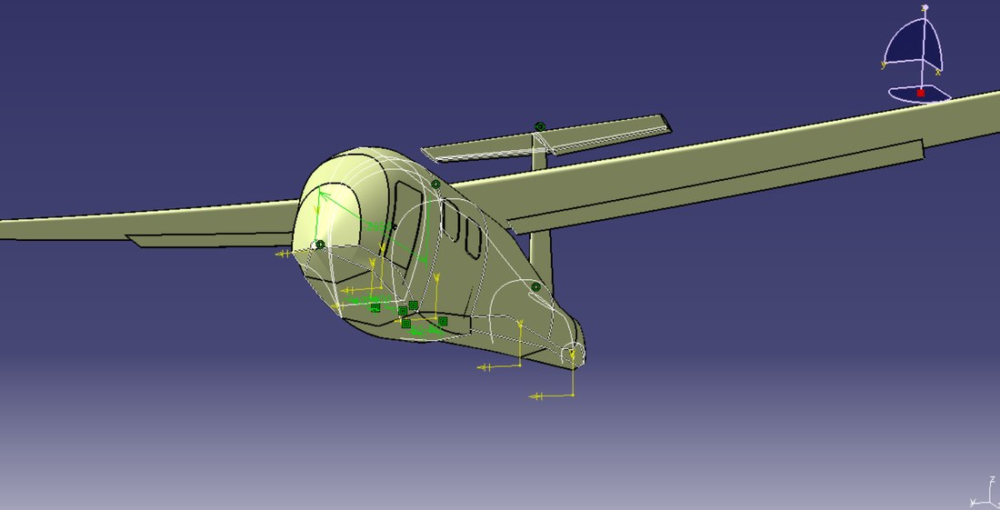
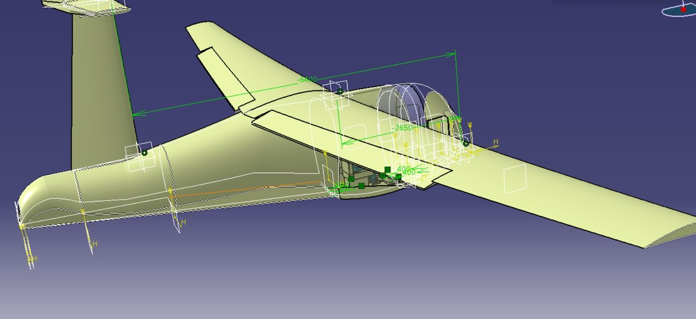
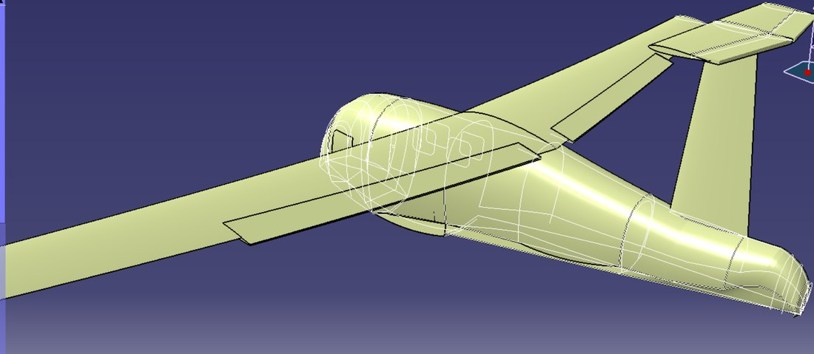
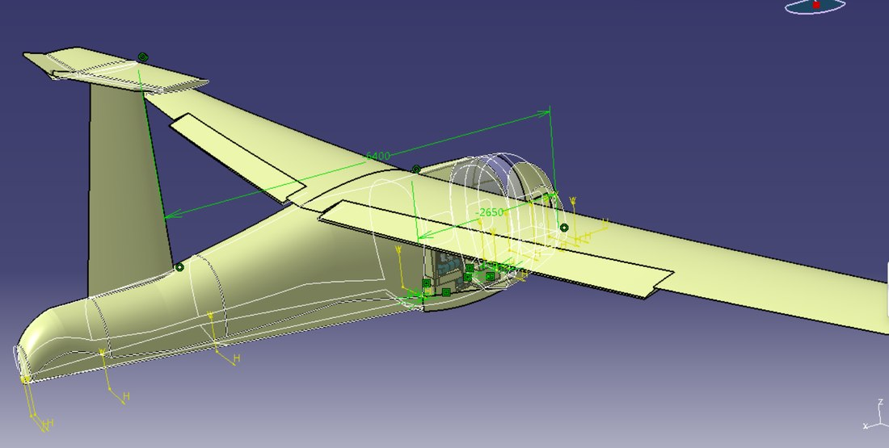
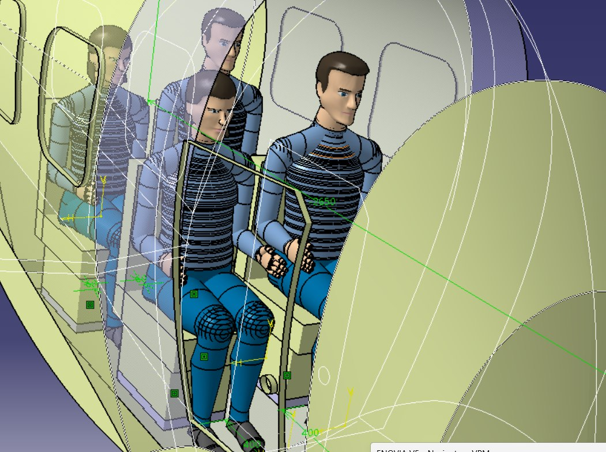
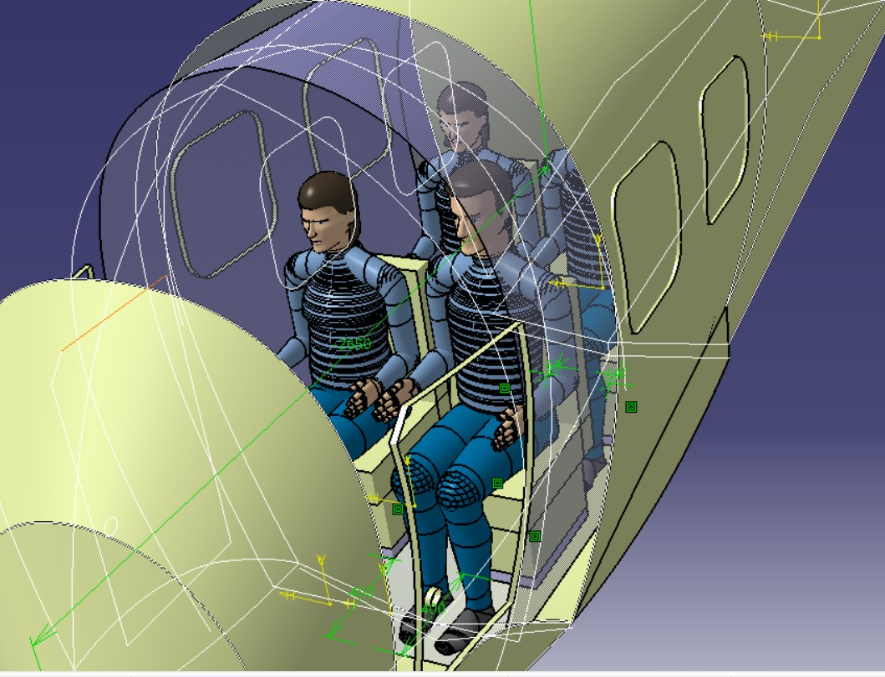

4-Passenger Towed Flying-Boat Glider | First-Order Sizing | CATIA V5 CAD

The Rangola is a 4-passenger unpowered airglider — a flying boat that is towed above the sea by an electric surface craft, like a sailplane on aero-tow. This project is the design phase that follows the concept work in the Rangola feasibility study (Project 11): it turns the screening-level figures into a dimensioned engineering baseline, and builds the low-fidelity, analysis-ready CAD model of the aircraft in CATIA V5.
Two deliverables sit behind this page. First, a preliminary sizing package — weights and balance, the wing, the flying-boat hull, the T-tail, and the tow/tag mechanism — derived from classical preliminary-design relations. Second, a clean CATIA CAD model of the air-section (fuselage, wings, tail, floats, tether point, cabin and occupants), de-featured so it is ready for preliminary CFD, FEA and kinematic studies.
This is a first-order engineering definition (confidence ±15–30%) meant for configuration freeze and prioritisation, not final stressing — no CFD or FEA is performed in this phase. Two results are worth flagging up front: the aircraft cannot fly at the study's 25 kn comparison speed (it is below stall), and the tow system is sized by the water take-off load, not by cruise. Both are explained below.
The model covers the air-section only — the tow boat, winch, motors and sea-section are out of scope. It includes the fuselage/hull, wings, T-tail and floats, the tether attachment point where the tow cable meets the aircraft, and the doors, windows, seats and a passenger payload for visualisation. The flaps and elevators are modelled in representative takeoff, cruise and landing positions (no detailed hinges or actuation), and the geometry is kept clean and de-featured — windows closed — so it is suitable for preliminary CFD, FEA and basic kinematic studies.

The high-aspect-ratio wing (18 m span), T-tail clear of spray, and the flying-boat hull slung below.

The de-featured but fully surfaced fuselage, cabin glazing and wing root — clean enough to mesh for CFD.
The model is posed in the three configurations the aircraft passes through on a tow, with the flaps and elevator set to representative positions for each phase.

Takeoff
High-lift flaps deployed for the water unstick.

Cruise
Clean wing for the 35–45 kn towed cruise.

Landing
Flaps and elevator set for the unpowered water landing after release.
The four seats are arranged 2+2 straddling the centre of gravity, so the aircraft stays in balance whether one seat or all four are filled. Occupant manikins are included for visualisation and to check sightlines and clearances; the windows are modelled closed so the external surface stays clean for CFD.

Cabin interior with the 2+2 seating and occupants.

A second view through the cabin, showing door and window placement.
An empty-weight buildup from composite-construction unit weights closes at ≈ 410 kg; with a four-passenger payload the design mass (MTOW) is 750 kg. The hull is the single heaviest group, as a watertight planing boat should be.
Heaviest groups: hull/fuselage ≈ 130 kg, wing ≈ 100 kg, furnishings ≈ 50 kg, systems (incl. ballistic chute) ≈ 43 kg, empennage ≈ 33 kg, tow system ≈ 24 kg, flight controls ≈ 22 kg, floats ≈ 8 kg.
The wing is sized by the water lift-off case — it must unstick the hull at the lowest practical speed, at maximum lift with flaps. That gives a reference area of ≈ 24 m²; holding the high aspect ratio fixes an 18 m span.
The honest 25-knot problem
The feasibility study used 25 kn as an apples-to-apples speed to compare against boats. The sizing shows the aircraft cannot actually fly there: at 750 kg, level flight at 25 kn would need a lift coefficient of ~3.0, which no practical flap system delivers — it is below the flapped stall of ~28 kn. The 25 kn figure is a comparison convenience, not a flyable cruise point. The true operating band is 35–45 kn, which reconciles the 18 m span with an efficient wing and keeps the tow craft below its cavitation ceiling.
The hull is a slender stepped flying-boat planing bottom, sized from flying-boat beam-loading practice; the T-tail keeps the tailplane clear of spray and wake. A quick spar check confirms the high-aspect-ratio wing closes structurally in composite.
The airglider trails behind and above the surface craft; all tow loads enter at a nose bridle, pass through a quick-release, and run down the tether to the craft's stern winch. The design driver here is a distinctive one.
The water take-off "hump" sizes the whole tow chain — not cruise. In steady flight the tether tension is essentially just the airframe drag, ≈ 0.37 kN. But before lift-off the hull is still in the water, and planing resistance peaks at the "hump" at ≈ 2.3 kN — roughly six times cruise. That peak, with a snatch factor and an aerospace factor of safety, sets the design loads.
A second Rangola-specific driver: the nose tow point sits ~3 m ahead of and ~0.4 m below the CG, so the tension applies a pitching moment that swings from ~0.1 kN·m in cruise to ~1.0 kN·m at the hump — a nose-down moment the tail has to trim across the whole take-off run. This coupling, which an ordinary towed boat does not have, is why the empennage is sized with margin.
First-order sizing — for configuration freeze, not final stressing
Everything here rests on textbook preliminary-design correlations and composite unit weights, at ±15–30% confidence. The biggest things to close next: the cruise L/D of 20 is optimistic (a real stepped hull is nearer 16–18, raising drag and tension ~20%); the two-body tethered dynamics — snatch, porpoising, formation stability — are the dominant unknown and set the true dynamic tension factor; and rough-water impact loads may exceed the flight case for the hull bottom. The recommended path is a low-cost tethered demonstrator to measure real tension traces, then a CFD hull polar and seakeeping study, then wing and hull FEA to the gust and water-impact envelopes, and finally the detailed CAD. The CAD model on this page is built to feed exactly that follow-on CFD/FEA work.
✓ Project Outcomes